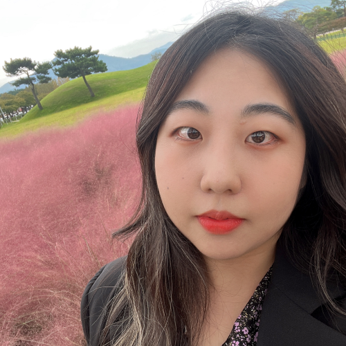

내 컴퓨터
안녕하세요! 같이 일할 맛이 나는 프론트엔드를 꿈꾸는 지원자 황인지입니다. HTML, CSS, Javascript와 같은 프로그램을 능숙하게 다룰 수 있고, 마케팅 경험을 통해 사람들과 소통하며 진행하는 업무에 특화되어 있습니다.
광고회사 인턴십을 통해 다양한 영상 및 이미지를 보면서 보기 좋은 디자인에 대한 감을 키웠고, 이를 바탕으로 상세페이지 제작 회사를 다니며 보기 좋은 디자인에 대한 눈을 키울 수 있었습니다. 업무 특성상 다양한 분야의 웹페이지를 프론트엔드 직무는 기본적으로 "심미적"인 감각이 있어야하는데 이러한 제 경험이 좀 더 포장되어진 웹페이지를 만드는 데 기여할 수 있을거라 확신합니다.